임업종묘기사 (2021-08-14 기출문제)
1과목: 조림학
1. 봄철에 종자가 성숙하는 수종은?
- Abies koreana
- Pinus densiflora
- Populus davidiana
- Quercus mongolica
(정답률: 90%)

2. 왜림 작업에 가장 적합한 수종은?
- Alnus japonica
- Larix kaempferi
- Abies holophylla
- Pinus koraiensis
(정답률: 70%)
3. 엽록소의 주요 구성 성분에 해당하는 무기 영양소는?
- 칼슘
- 칼륨
- 마그네슘
- 몰리브덴
(정답률: 70%)
4. 가지치기에 대한 설명으로 옳지 않은 것은?
- 수령이 높을수록 효과가 높다.
- 수목의 직경생장을 증대시킨다.
- 산불이 발생했을 때 수관화를 경감시킨다.
- 임지 표면에 햇빛을 받는 양이 많아져 하층목 발생에 도움을 준다.
(정답률: 80%)
5. 묘목 양성에 대한 설명으로 옳은 것은?
- 밤나무에 흔히 적용하는 접목법은 복접이다.
- 용기묘 양성은 양묘 비용이 많이 들지 않고 특별한 기술이 필요 없다.
- 발육이 완전하고 조직이 충실하며 측아의 발달이 잘 되어 있는 것이 우량묘의 조건이다.
- 모식물의 가지를 휘어지게 하여 땅속에 묻어 고정하고 발근하게 하는 방법은 압조법이라 한다.
(정답률: 알수없음)
6. 산림 종자의 생리적 휴면을 유지시키는 호르몬은?
- 옥신(auxin)
- 지베렐린(gibberellin)
- 사이토키닌(cytokinin)
- 아브시식산(abscisic acid)
(정답률: 알수없음)
7. 숲의 종류를 구분하는데 있어 작업종 또는 생성 기원에 따르지 않은 것은?
- 교림
- 순림
- 왜림
- 중림
(정답률: 알수없음)
8. 판갈이 작업에 대한 설명으로 옳지 않은 것은?
- 작업 시기로는 봄이 알맞다.
- 땅이 비옥할수록 판갈이 밀도는 밀식하는 것이 좋다.
- 지하부와 지상부의 균형이 잘 잡힌 묘목을 양성할 수 있다.
- 참나무류는 만 2년생이 되어 측근이 발달한 후에 판갈이 작업하는 것이 좋다.
(정답률: 80%)
9. 우리나라 천연림 보육에서 적용하고 있는 수형급이 아닌 것은?
- 미래목
- 중용목
- 중립목
- 방해목
(정답률: 알수없음)
10. 임분 갱신 방법 및 용어에 대한 설명으로 옳은 것은?
- 소벌구의 모양은 일반적으로 원형이다.
- 산벌은 임목을 한꺼번에 벌채하는 것이다.
- 소벌구는 측방 성숙 임분의 영향을 받는다.
- 모수는 갱신될 임지에 식재목을 공급하기 위한 묘목이다.
(정답률: 알수없음)
11. 토양의 공극에 대한 설명으로 옳은 것은?
- 토양의 단위 체적 중량이다.
- 토양 내 물의 용적 비율이다.
- 토양 측정 시 거노된 토립자의 무게이다.
- 토양 내 공기 및 물에 의해서 채워진 부분이다.
(정답률: 70%)
12. 다음 조건에 따른 파종량은?
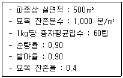
- 25.7 kg
- 27.2 kg
- 28.7 kg
- 29.2 kg
(정답률: 알수없음)
13. 잣나무에 대한 설명으로 옳지 않은 것은?
- 심근성 수종이다.
- 잎 뒷면에 흰 기공선을 가지고 있다.
- 한대성 수종으로 잎이 5개씩 모여난다.
- 어려서는 음수이고 자라면서 햇빛 요구량이 줄어든다.
(정답률: 80%)
14. 택벌 작업 시 고려 사항으로 옳지 않은 것은?
- 하종벌과 후벌 시기
- 주요 임분의 물리적 안정성
- 상층으로 자랄 임목의 건전성
- 자체 조절 능력이 가능한 단계적 갱신
(정답률: 알수없음)
15. 산림 토양에서 질산화 작용에 대한 설명으로 옳지 않은 것은?
- 질산화 작용이 거의 일어나지 않아 질소가 NH4+ 형태로 존재한다.
- 질산화 작용은 담당하는 박테리아는 중성토양에서 활동이 왕성하다.
- 질산화 작용이 억제되더라도 뿌리는 균근의 도움으로 암모늄태 질소를 직접 흡수할 수 있다.
- 질산태 질소는 토양 내 산소 공급이 잘될 때 환원되어 N2 가스나 NOx 화합물 형태로 대기권으로 돌아간다.
(정답률: 알수없음)
16. 관다발 형성층의 시원세포가 수피 방향으로 분열하여 형성되며, 체내 물질의 이동 통로가 되는 것은?
- 물관부
- 체관부
- 수지구
- 수피층
(정답률: 알수없음)
17. 수목의 기공 개폐에 대한 설명으로 옳지 않은 것은?
- 30~35℃ 이상 온도가 올라가면 기공이 닫힌다.
- 기공은 아침에 해가 뜰 때 열리며 저녁에는 서서히 닫힌다.
- 엽육 조직의 세포 간극에 있는 이산화탄소 농도가 높으면 기공이 열린다.
- 잎의 수분 포텐셜이 낮아지면 수분 스트레스가 커지며 기공이 닫힌다.
(정답률: 60%)
18. 소나무과 수종의 개화생리에 대한 설명으로 옳지 않은 것은?
- 암꽃은 주로 수관의 상단에 핀다.
- 같은 가지에서 암꽃이 수꽃보다 위쪽에 핀다.
- 수꽃은 생장이 저조한 끝가지의 기부에 많이 핀다.
- 수꽃은 화분 비산이 끝나도 계속 가지에 붙어 있다가 가을에 떨어진다.
(정답률: 알수없음)
19. 덩굴식물 가운데 조림목에 피해를 가장 많이 주고 제거가 가장 어려운 것은?
- 칡
- 머루
- 사위질빵
- 으름덩굴
(정답률: 80%)
20. 종자를 습한 상태로 낮은 온도에서 보관하여 휴면을 타파하는 방법은?
- 추파법
- 노천매장
- 2차 휴면
- 상처 유도
(정답률: 알수없음)
2과목: 임목육종학
21. 다음 ( ) 안에 가장 적합한 것은?
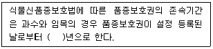
- 15
- 20
- 25
- 30
(정답률: 알수없음)
22. 다수유전자(polygene)에 대한 설명으로 옳지 않은 것은?
- 연속변이를 나타낸다.
- 각 유전자의 작용이 환경변이보다 작다.
- 같은 형질에 작용하는 유전자 수가 매우 많다.
- 개체 간의 양적 차이를 설명하는 경우 멘델의 유전 법칙이 적용한다.
(정답률: 알수없음)
23. 다음에 제시된 환경 변이가 큰 야외 식재시험에 대한 설명으로 옳은 것은?
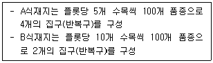
- A식재지와 B식재지의 통계적 정확도는 같다.
- A식재지가 B식재지보다 통계적 정확도가 더 높다.
- B식재지가 A식재지보다 통계적 정확도가 더 높다.
- 통계적 정확도는 다른 요인에 의하여 결정된다.
(정답률: 70%)
24. 다음 중 도입 수종이 아닌 것은?
- 잣나무
- 백합나무
- 리기다소나무
- 방크스소나무
(정답률: 70%)
25. 인공림에서 침엽수 수형목을 선발하는 요령으로 옳은 것은?
- 1ha 당 3본 미만 선발
- 임분 내 가장 좋은 지위에서 선발
- 임연목 중에서 수고가 가장 높은 수목을 선발
- 수령은 10년생 이상, 벌기령 이전의 수목을 선발
(정답률: 알수없음)
26. 조직배양의 목적으로 가장 거리가 먼 것은?
- 차대검정
- 무성번식
- 순계육성
- 세포융합
(정답률: 알수없음)
27. 임목 육종의 특성에 대한 설명으로 옳지 않은 것은?
- 임목은 다년생 식물로 품종개량에 장기간이 필요하다.
- 수고 및 비대생장의 양적형질은 2개 이상의 유저자가 관여된 경우가 많다.
- 임목은 자가수정을 원칙으로 하므로 종자번식에 의한 신품종의 유지가 용이하다.
- 임목에는 접목 및 삽목 등의 무성번식에 의해 품조의 특성이 유지되는 클론종이 많다.
(정답률: 70%)
28. 도입 육종에 대한 설명으로 옳지 않은 것은?
- 증식 방법이 대체로 알려져 있다.
- 조림과 무육에 관한 정보를 이용할 수 있다.
- 원산지에서의 경제적 중요성을 그대로 적용할 수 있다.
- 목재 재질과 용도에 대한 연구 비용을 절감할 수 있다.
(정답률: 64%)
29. 라틴 방격법에 대한 설명으로 옳은 것은?
- 처리수가 반복수보다 많다.
- 반복수가 처리수보다 많다.
- 반복수와 처리수는 항상 같다.
- 처리수와 반복수는 상관이 없다.
(정답률: 알수없음)
30. 이질배수체를 얻는 방벙브로 가장 효과적인 것은?
- 자식을 계속한다.
- 콜히친을 처리한다.
- 다배종자에서 추출한다.
- 많은 파종묘 중에서 골라낸다.
(정답률: 70%)
31. 다음 설명에 해당하는 것은?
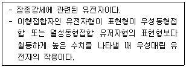
- 우성 유전자
- 초우성 유전자
- 상가적 유전자
- 상위성 유전자
(정답률: 알수없음)
32. 다음 그림과 같이 교배조합(×로 표시된 곳)을 설계하는 것은?
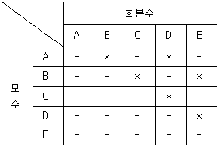
- 반대조교배
- 검정목교배
- 완전대조교배
- 부분대조교배
(정답률: 70%)
33. 감수분열에 대한 설명으로 옳지 않은 것은?
- 멘델의 유전 법칙과 무관하다.
- 연속적인 2번의 세포분열이 일어난다.
- 생물종의 고유한 염색체 수를 유지시킨다.
- 염색체 조성이 서로 다른 배우자를 생산한다.
(정답률: 60%)
34. 종자에 의한 양묘의 문제점을 해결하고자 다음과 같은 연구를 하고 있다. 수행하고 있는 연구 내용은?
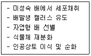
- 순계육성 기술개발
- 세포융합 기술개발
- 형질전환 및 형질도입 기술개발
- 체세포배 유도에 의한 대량증식 방법 개발
(정답률: 70%)
35. 산림용 종자검정 및 검사 요령에 의한 시료축분 방법은?
- 2분법
- 4분법
- 8분법
- 10분법
(정답률: 70%)
36. 세포융합에 대한 설명으로 옳은 것은?
- 세포융합은 세포 내의 핵융합만을 대상으로 한다.
- 현재까지 식물에서의 세포융합은 동일종 내에서만 가능하다.
- 식물체의 유전적인 유연관계가 멀어지면 세포융합은 어려워진다.
- 체세포를 대상으로 하는 세포융합은 현재까지 성공하지 못하고 있다.
(정답률: 알수없음)
37. 형질전환 방법으로 옳지 않은 것은?
- 유저자총
- 전기충격
- PEG 제거
- Agrobacterium 이용
(정답률: 알수없음)
38. 다음 중 배수체에 해당하는 것은?
- (2n + 2)개의 염색체를 가진 수목
- (3n - 1)개의 염색체를 가진 수목
- (3n + 1)개의 염색체를 가진 수목
- n 염색체의 완전한 3조를 가진 수목
(정답률: 알수없음)
39. 아조변이를 이용한 육종 방법에 속하는 것은?
- 교잡육종법
- 선발육종법
- 배수성육종법
- 돌연변이육종법
(정답률: 알수없음)
40. Hardy-Weinberg 법칙이 성립되기 위한 전제 조건으로 옳지 않은 것은?
- 자연 도태가 없어야 한다.
- 돌연변이가 일어나야 한다.
- 교잡이 무작위적으로 일어나야 한다.
- 표본 오차가 무시되는 정도의 대집단이라야 한다.
(정답률: 60%)
3과목: 산림보호학
41. 오리나무잎벌레를 방제하는 방법으로 옳지 않은 것은?
- 알덩어리가 붙어 있는 잎을 소각한다.
- 5~6월에 모여 사는 유충을 포살한다.
- 유충 발생기에 적정 살충제를 살포한다.
- 수은등이나 유아등을 설치하여 성충을 유인한다.
(정답률: 알수없음)
42. 잣나무 털녹병균이 중간기주에 형성하는 포자의 형태가 아닌 것은?
- 녹포자
- 담자포자
- 겨울포자
- 여름포자
(정답률: 알수없음)
43. 가뭄으로 인한 수목 피해인 한해(drought injury)에 대한 설명으로 옳은 것은?
- 천근성 수종은 한해에 강하다.
- 소나무, 자작나무가 한해에 강하다.
- 묘포지의 육묘 작업을 평년보다 늦게 하여 예방한다.
- 낙엽 채취를 하여 지피물을 제거해 주면 한해를 방지할 수 있다.
(정답률: 알수없음)
44. 낙엽층과 조부식층의 상부가 타는 산불의 종류는?
- 수간화
- 지표화
- 수관화
- 지중화
(정답률: 알수없음)
45. 가해하는 수목의 종류가 가장 많은 해충은?
- 솔나방
- 솔잎혹파리
- 천막벌레나방
- 미국흰불나방
(정답률: 80%)
46. 7월 하순 이후 참나무류의 종실에 달린 가지가 땅에 많이 떨어져 있다면 이것은 어떤 해충의 피해인가?
- 밤바구미
- 복숭아명나방
- 밤나무재주나방
- 도토리거위벌레
(정답률: 알수없음)
47. 다음 설명에 해당하는 해충은?
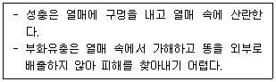
- 밤바구미
- 버들바구미
- 밤나무혹벌
- 복숭아명나방
(정답률: 알수없음)
48. 가루깍지벌레를 방제하는 방법으로 옳지 않은 것은?
- 수피 사이의 번데기를 채취하여 소각한다.
- 밀도가 낮으면 면장갑을 낀 손으로 잡는다.
- 성충이 되기 전에 적정한 살충제를 살포한다.
- 포식성 천적인 무당벌레류, 풀잠자리류를 보호 및 활용한다.
(정답률: 알수없음)
49. 밤나무혹벌에 대한 설명으로 옳지 않은 것은?
- 천적으로는 노란꼬리좀벌, 남색긴꼬리좀벌이 있다.
- 1년에 1회 발생하며 눈의 조직 내에서 유충의 형태로 월동한다.
- 유충기를 벌레 혹에서 보낸 후에 탈출하여 번데기는 수피 틈새에 형성한다.
- 피해목은 개화 및 결실이 잘 되지 않고, 피해가 누적되면 고사하는 경우가 많다.
(정답률: 알수없음)
50. 파이토플라스마를 매개하는 해충과 수목병의 연결이 옳지 않은 것은?
- 뽕나무 오갈병 - 마름무늬매미충
- 붉나무 빗자루병 - 담배장님노린재
- 오동나무 빗자루병 - 담배장님노린재
- 쥐똥나무 빗자루병 – 마름무늬매미충
(정답률: 60%)
51. 균사에 격벽이 없고, 무성포자인 유주포자를 생성하는 것은?
- 난균류
- 자낭균류
- 담자균류
- 불완전균류
(정답률: 알수없음)
52. 소나무 또는 잣나무에 발생하는 잎떨림병을 방제하는 방법으로 옳지 않은 것은?
- 병든 낙엽을 모아 태운다.
- 묘포에서 비배관리를 철저히 한다.
- 포자가 비산하는 6~9월에 약제를 살포한다.
- 수관 하부보다 상부에 가지치기를 주로 실시한다.
(정답률: 70%)
53. 방제 대상이 아닌 곤충류에도 피해를 주기 가장 쉬운 농약은?
- 전착제
- 생물농약
- 접촉성 살충제
- 침투성 살충제
(정답률: 70%)
54. 늦여름이나 가을철에 내린 서리로 인하여 수목에 피해를 주는 것은?
- 상렬
- 만상
- 조상
- 연해
(정답률: 알수없음)
55. 오리나무 갈색무늬병을 방제하는 방법으로 옳지 않은 것은?
- 연작을 실시한다.
- 종자를 소독한다.
- 병든 낙엽을 태운다.
- 밀식 시에는 솎아주기를 한다.
(정답률: 80%)
56. 벚나무 빗자루병을 방제하는 방법으로 옳은 것은?
- 매개충을 구제한다.
- 병든 가지를 제거한다.
- 저항성 품종을 식재한다.
- 항생제 계통의 약제를 나무주사한다.
(정답률: 알수없음)
57. 수목병과 병징(또는 표징) 연결로 옳지 않은 것은?
- 리지나뿌리썩음병 : 침엽수의 뿌리가 침해받아 말라 죽는다.
- 균핵병 : 죽은 조직 속 또는 표면에 씨앗 같은 검은 덩어리가 생긴다.
- 철쭉류 떡병 : 잎, 꽃의 일부분이 떡 모양으로 하얗게 부풀어 오른다.
- 흰가루병 : 침엽수의 잎, 어린가지의 표면에 흰가루를 뿌린 듯한 모습이다.
(정답률: 알수없음)
58. 참나무 시들음병 방제 방버으로 가장 효과가 약한 것은?
- 유인목 설치
- 끈끈이롤트랩
- 예방 나무주사
- 피해목 벌채 훈증
(정답률: 알수없음)
59. 곤충의 일반적인 형태에 대한 설명으로 옳지 않은 것은?
- 소화관은 전장, 중장, 후장으로 나뉜다.
- 앞날개는 앞가슴에, 뒷날개는 뒷가슴에 부착되어 있다.
- 가슴은 앞가슴, 가운뎃가슴, 뒷가슴으로 구성되어 있다.
- 다리는 밑마디, 도래마디, 넓적마디, 종아리마디, 발마디로 구성되어 있다.
(정답률: 알수없음)
60. 솔수염하늘소에 대한 설명으로 옳지 않은 것은?
- 1년에 1회 발생한다.
- 성충의 우화시기는 5~8월이다.
- 목질부 속에서 번데기 상태로 월동한다.
- 유충이 소나무의 형성층과 목질부를 가해한다.
(정답률: 알수없음)
4과목: 토양학 및 비료학
61. 토양수분함량이 가장 높은 토양수분퍼텐셜과 토성 조건은?
- -0.01MPa, 양토
- -0.1MPa, 양토
- -0.01MPa, 식토
- -0.1MPa, 식토
(정답률: 알수없음)
62. 석회질 비료에 속하지 않는 것은?
- 패화석
- 소석회
- 석회질소
- 석회고토
(정답률: 알수없음)
63. 우리나라에서 가장 많이 분포하며, 침식이 심하지 않는 대부분의 산악지에서 충적토와 붕적토를 포함하는 것은?
- 미숙토
- 성숙토
- 과숙토
- 반숙토
(정답률: 알수없음)
64. 한랭습윤 기후 하의 산성 조건에서 이루어지는 토양은?
- 포드졸(podsol)
- 라토졸(latosol)
- 리토졸(lithosol)
- 체르노젬(chernosem)
(정답률: 73%)
65. 토양 공극의 크기가 가장 큰 것은?
- 식토
- 사토
- 점토
- 식양토
(정답률: 알수없음)
66. 양이온 이액순위에 대한 설명으로 옳은 것은?
- 원자가가 높을수록 치환 침입력이 크다.
- 이온의 크기가 클수록 치환 침입력이 크다.
- 이온의 가수도가 클수록 치환 침입력이 크다.
- 유리 양이온의 농도가 낮을수록 치환 침입력이 크다.
(정답률: 알수없음)
67. 건조 토양에서 염화칼륨(KCl)과 같은 중성염으로 침출했을 때 나타나는 산성을 무엇이라 하는가?
- 활산성
- 전산성
- 가수산성
- 치환산성
(정답률: 80%)
68. 토양의 유기물에 대한 설명으로 옳지 않은 것은?
- 식물생육에 필요한 영양분을 공급한다.
- 토양의 양분 및 수분보유능력을 증가시킨다.
- 토양 입단화를 촉진시켜 토양의 물리성을 개선한다.
- 유기물의 분해속도는 셀룰로오스의 함량에 따라 크게 달라진다.
(정답률: 60%)
69. 강산성 토양에서 발생할 수 있는 현상이 아닌 것은?
- 토양 중 Al3+ 감소
- 토양생물 활성 감소
- 유기물 분해속도 감소
- 수소 이온으로 인한 식물의 피해 발생
(정답률: 알수없음)
70. 생리적 산성비료에 해당하는 것은?
- 석회질소
- 황산칼륨
- 용성인비
- 중과린산석회
(정답률: 알수없음)
71. 양이온치환용량(CEC)에 대한 설명으로 옳지 않은 것은?
- pH가 증가할수록 CEC가 증가한다.
- 유기물 함량이 많을수록 CEC가 크다.
- 토양입자가 고울수록 CEC가 감소한다.
- 토양 또는 교질물에 부착되어 있는 치환성양이온의 총량을 표시한 것이다.
(정답률: 알수없음)
72. 토양 침식을 감소시키는 방법이 아닌 것은?
- 지표면을 피복한다.
- 객토 및 복토를 실시한다.
- 바람이 센 곳을 방풍림을 만든다.
- 토양의 이화학적 특성을 개량한다.
(정답률: 70%)
73. 토양의 입단을 형성하는데 방해가 되는 양이온은?
- Na+
- Fe2+
- Ca2+
- Al3+
(정답률: 알수없음)
74. 토양의 물리적 성질에 대한 설명으로 옳지 않은 것은?
- 5YR 6/4란 기호는 토양의 색을 나타낸다.
- 점토는 1차 광물보다 2차 광물을 주로 함유하고 있다.
- 토양의 무기입자를 모래, 미사, 점토로 구분한 함량비를 토양구조라 한다.
- 토양을 구성하는 성분 중에서 시기에 따라 가장 크게 변하는 것은 액상과 기상이다.
(정답률: 알수없음)
75. 질산나트륨과 혼용하면 공기 중으로 휘발되는 비료는?
- 황산칼륨
- 염화암모늄
- 황산암모늄
- 과인산석회
(정답률: 알수없음)
76. 다음 설명에 해당하는 것은?
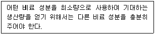
- 우세의 법칙
- Wolff의 법칙
- 과잉흡수의 법칙
- 보수점감의 법칙
(정답률: 알수없음)
77. 유기물을 퇴비로 만들 때 장점만을 올바르게 나열한 것은?
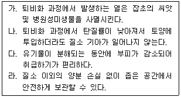
- 가
- 가, 나
- 가, 나, 다
- 가, 나, 다, 라
(정답률: 알수없음)
78. 다음 설명에서 옳은 내용만 나열한 것은?
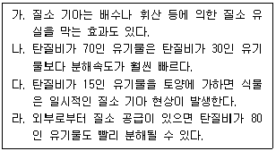
- 가, 나
- 가, 라
- 나, 다
- 다, 라
(정답률: 알수없음)
79. 다음 설명에 해당하는 것은?
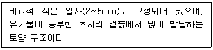
- 괴상구조
- 벽상구조
- 판상구조
- 입상구조
(정답률: 73%)
80. 토양 생물인 지렁이에 대한 설명으로 옳은 것은?
- 거의 분해가 되지 않은 유기물을 좋아한다.
- 물이 잘 빠지지 않는 과습한 지역을 좋아한다.
- 생육에 가장 적합한 토양 온도는 30℃ 내외이다.
- 과다한 암모니아태 질소는 지렁이의 개체수를 증가시킨다.
(정답률: 알수없음)